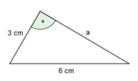
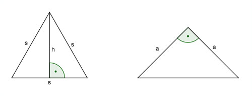
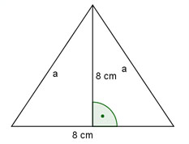
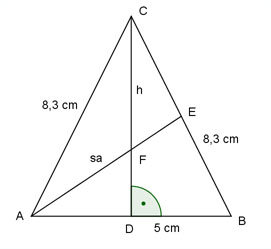
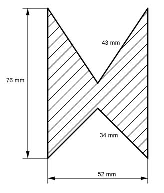

Aufgabe 56
Wie groß sind für das gleichschenklige Dreieck der
Schenkel a und die Strecke f?
 a = cm
a = cm
Wie löse ich Matheaufgaben?
Flächenberechnungen
Aufgabe 45 Ein rechtwinkliges Dreieck hat eine Kathete von 3 cm und eine Hypotenuse von 6 cm? Wie groß ist seine Fläche?
Aufgabe 46 Ein gleichschenklig-rechtwinkliges Dreieck mit dem Schenkel a soll die gleiche Fläche haben wie ein gleichseitiges mit der Seite s. Drücken Sie s durch a aus. s = * a
Aufgabe 47 Ein rechtwinkliges Dreieck mit der Höhe h = 3 cm hat eine Fläche von A = 12 cm². Berechnen Sie die Seiten a, b und c des Dreiecks.
Aufgabe 48 Wie groß ist die Fläche eines Dreiecks mit a = 3 cm, b = 5 cm und c = 4 cm? A = cm²
Aufgabe 49 In einem gleichschenkligen Dreieck ist die Höhe so groß wie die Basis und beträgt 8 cm. Wie groß ist seine Fläche und ein Schenkel?
Aufgabe 50 In einem Dreieck ist eine Seite = 5 cm, eine zweite = 3 cm und die Fläche = 5 cm². Wie groß ist die dritte Seite? Größere Möglichkeit = cm
Aufgabe 51 Ein gleichschenkliges Dreieck hat eine Höhe von 5 cm und einen Schenkel von 8 cm. Wie groß ist seine Fläche?
Aufgabe 52 Ein gleichschenkliges Dreieck hat eine Fläche von 10 cm² und eine Grundseite von 4 cm. Wie groß ist die Höhe auf die Grundseite und ein Schenkel? Höhe = cm
Aufgabe 53 Schenkel und Grundseite eines gleichschenkligen Dreiecks verhalten sich wie 2 : 1. Es hat eine Fläche von 6 cm². Wie groß ist ein Schenkel und die Grundseite?
Aufgabe 54 Ein gleichschenkliges Dreieck hat eine Fläche von 8 cm² und einen Schenkel von 5 cm. Wie groß ist sein Inkreisradius? Kleinerer = cm
Aufgabe 55 Ein gleichschenkliges Dreieck hat einen Umfang von 16 cm und eine Höhe auf die Grundseite von 4 cm. Wie groß sind die Fläche, die Länge eines Schenkels und die Grundseite?
Aufgabe 56 Wie groß sind für das gleichschenklige Dreieck der Schenkel a und die Strecke f?
Aufgabe 57 Ein gleichschenkliges Dreieck hat eine Grundseite von 5 cm und Schenkel von 8,3 cm. Wie lang ist die Seitenhalbierende eines Schenkels?
Aufgabe 58 In welchem Verhältnis teilt die Seitenhalbierende eines Schenkels in einem gleichschenkligen Dreieck die entstehenden Flächen? A1 : A2 =
Aufgabe 59 Berechnen Sie die Länge der Strecken x und y in m.

Aufgabe 60 Ein Beobachter sieht aus 150 m Entfernung und unter einem Erhebungswinkel von 30° den Lichtfleck, den ein senkrecht nach oben gerichteter Scheinwerfer an der Wolkenuntergrenze erzeugt. Wie hoch stehen die Wolken in m? h = m
Aufgabe 61 Auf einer Karte, Maßstab 1 : 25 000, ist eine Zahnradbahnstrecke 13,3 cm lang. Sie überwindet auf dieser Strecke einen Höhenunterschied von 475 m. Berechnen Sie die Länge l der Bahnstrecke in m.
Aufgabe 62 Einem gleichschenkligen, rechtwinkligen Dreieck ist ein gleichseitiges Dreieck einbeschrieben. Drücken Sie b durch a aus.  b = * a
Aufgabe 63 Einem gleichschenkligen, rechtwinkligen Dreieck ist ein gleichseitiges Dreieck einbeschrieben. Drücken sie b durch a aus. 
Aufgabe 64 Von einem rechtwinkligen Dreieck sind die Hypotenusenabschnitte q = 4 cm und p = 5 cm bekannt. Berechnen Sie die Länge der Katheten a und b in cm und die Fläche A in cm².
a = cm
Aufgabe 65 Von einem rechtwinkligen Dreieck sind die Höhe h = 5 cm und der Hypotenusenabschnitt q = 3 cm gegeben. Berechnen Sie die Länge der Seiten a, b und c in cm und die Fläche A in cm².
Aufgabe 66 Berechnen Sie den Inkreisradius ri und den Ankreisradius ra eines rechtwinkligen Dreiecks in cm, wenn die Katheten a = 8 cm und b = 6 cm.  ri = cm
Aufgabe 67 Drücken Sie r2 durch r1 aus.

Aufgabe 68 Drücken Sie h1, h2 und r2 durch r1 aus.
h2 = * r1
Aufgabe 69 Drücken Sie r2, r3 und r4 durch r1 aus.

Aufgabe 70 Drücken Sie r2 und r3 durch r1 aus.
r2 = * r1
Aufgabe 71 Berechnen Sie die Höhe h des dargestellten Gefäßes in dm und das Volumen in dm³, wenn g1 = 6 dm, g2 = 8 dm, a = 5 dm und b = 4 dm betragen.

Aufgabe 72 Mit der dargestellten Lehre läßt sich überprüfen, ob ein Spiralbohrer richtig nachgeschliffen ist. Berechnen Sie die Höhe h in mm, wenn alle Maße in mm angegeben sind.
h = mm
Aufgabe 73 Ein Damm hat den dargestellten Querschnitt. Berechnen Sie die Länge l der Böschung in m.
Aufgabe 74 Berechnen Sie die Fläche A des einbeschriebenen Quadrates in cm².  A = cm²
Aufgabe 75 Das regelmäßige Sechseck hat eine Fläche von 120 cm². Wie lang ist eine Seite s in cm?
Aufgabe 76 Berechnen Sie die Länge der Seite s in cm.
s = cm
Aufgabe 77 Berechnen Sie von dem gleichschenkligen Trapez den Umfang U in cm. 
Aufgabe 78 Berechnen Sie die Länge der Raumdiagonalen d in cm.
d = cm
Aufgabe 79 Wie tief dürfte das 2 m hohe und mit 25 cm Tiefe gelieferte Regal höchstens sein, wenn es wie skizziert durch die Tür passen soll?

Aufgabe 80 Ein Fluss ist 180 m breit und hat eine Strömungsgeschwindigkeit vF = 0,8 m/s. Um ihn zu überqueren braucht ein Schwimmer 5 Minuten. a) Um wie viel m wird der Schwimmer dabei seitlich abgetrieben? b) Wie viel m hat der Schwimmer bei der Überquerung zurückgelegt?
a) Es sind m.
Aufgabe 81 Das Dreieck CDE hat eine Fläche von 2 cm². Der Punkt E halbiert die Strecke AB. Die Strecke DE ist 1 cm lang. Berechnen sie die Längen der Hypotenuse c, der beiden Katheten und b und der Hypotenusenabschnitte q und p.

Aufgabe 82 Berechnen Sie den Umfang U des farbigen Dreiecks in cm.
U = cm
Aufgabe 83 Das Dreieck CDE hat eine Fläche von 2 cm². Der Punkt E halbiert die Strecke AB. Die Strecke DE ist 1 cm lang. Berechnen sie die Längen der Hypotenuse c, der beiden Katheten und b und der Hypotenusenabschnitte q und p.
Aufgabe 84 Berechnen Sie die Größe der farbigen Fläche A in mm².
A = mm²
Aufgabe 85 Berechnen Sie die farbige Trapezfläche A in mm².
Aufgabe 86 Berechnen Sie die Größe der farbigen Fläche A in mm².
A = mm²
Aufgabe 87 Berechnen Sie die Länge der Strecke x in mm.